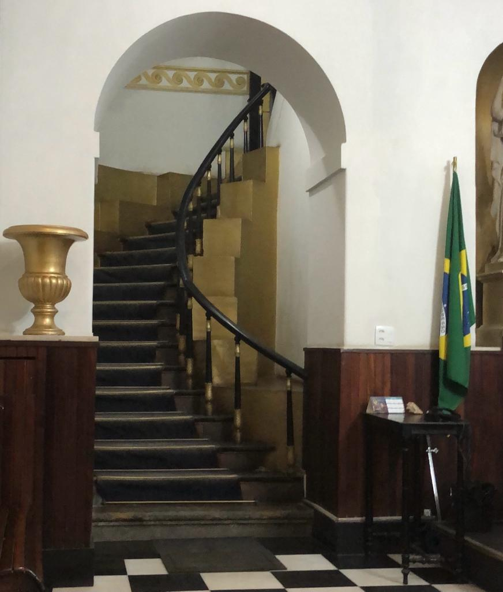
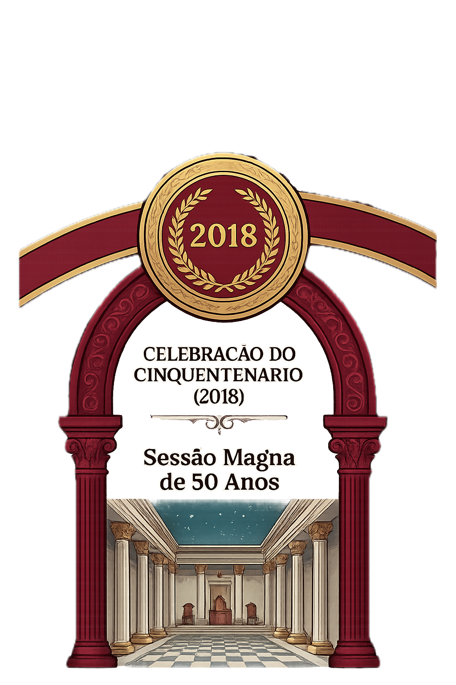

A Loja
Apresentação, identidade, filiação, rito e atuação institucional.
Grande Benfeitoria da Ordem
6ª Loja Fundadora do Rito Brasileiro
Detentora constitucional do título por integrar o grupo das 12 primeiras Lojas do Rito.

A Loja
Fundada em 1968, a A∴R∴L∴S∴ Pioneiros do Progresso integra a história da reimplantação do Rito Brasileiro e preserva, ao longo de sua trajetória, uma identidade construída sobre tradição, trabalho e compromisso com seus princípios. Este espaço apresenta a Loja, sua origem, sua atuação e os registros que mantêm viva a memória de seus obreiros.
Apresentação, identidade, filiação, rito e atuação institucional.
Linha histórica, fundação, pioneirismo e marcos relevantes.
Sessões abertas, solenidades, eventos e atividades públicas.

Origens e fundação
A Sessão Magna Comemorativa do Jubileu de Ouro, realizada em 9 de novembro de 2018, celebrou os cinquenta anos de fundação da A∴R∴L∴S∴ Pioneiros do Progresso. A solenidade reuniu autoridades, IIr∴ e convidados em homenagem à trajetória da Loja e ao legado construído ao longo de cinco décadas de dedicação aos ideais do Rito Brasileiro.
Ver maisAcervo e memória
Este espaço receberá fotografias, documentos, homenagens e marcos históricos relacionados entre si pelo container OntoBDC.
Agenda pública
Conteúdo provisório para testar hierarquia, ritmo e comportamento responsivo.
Descrição breve, local e horário.
Descrição breve, local e horário.
Descrição breve, local e horário.